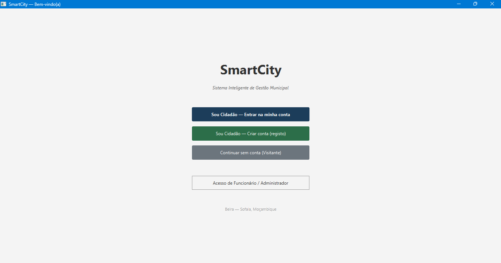
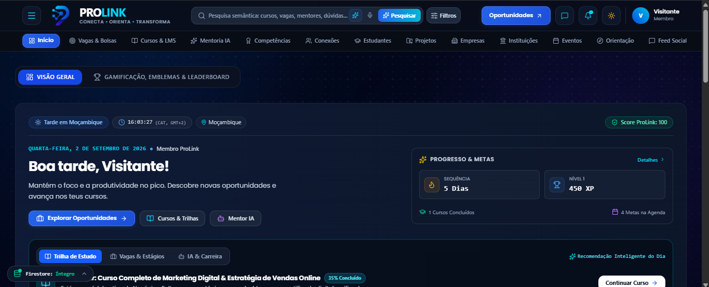
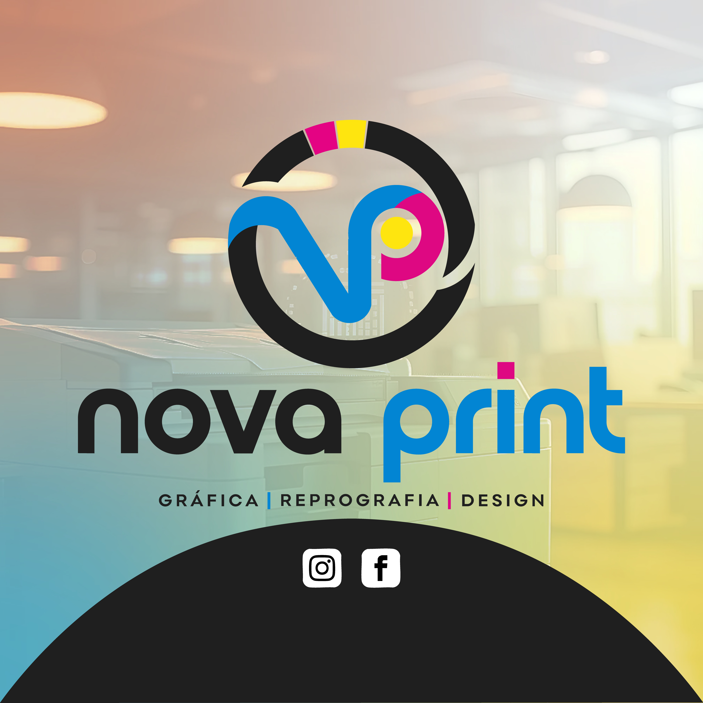
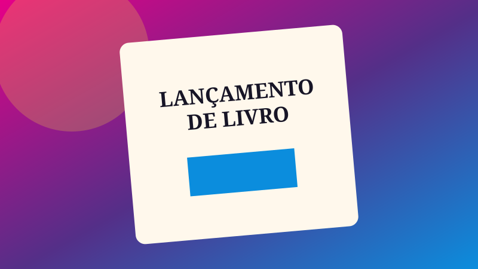

SmartCity
Sistema municipal modular concebido para melhorar a organização e prestação de serviços ao cidadão.
- 13 módulos e perfis ADMIN, FUNCIONÁRIO e CIDADÃO
- RBAC, simulação de IA e frota com GPS
Portfólio selecionado
Explorações académicas, profissionais e pessoais onde tecnologia, produto e comunicação visual trabalham juntos.

Sistema municipal modular concebido para melhorar a organização e prestação de serviços ao cidadão.

Ecossistema que acompanha jovens desde a orientação vocacional até à empregabilidade e empreendedorismo.
Sistema académico orientado a regras, dados persistentes e diferentes responsabilidades de utilizador.
Aplicação para gerir informação académica e aplicar a escala de avaliação utilizada no contexto moçambicano.

Modelos profissionais e padronizados para utilização empresarial, unindo design, documentação e automação.

Experiência digital temática para comunicação de um lançamento de livro, com atenção a responsividade e atmosfera visual.
Multimédia
Este é apenas uma breve demostracao em video assets/video/ quando estiver disponível.